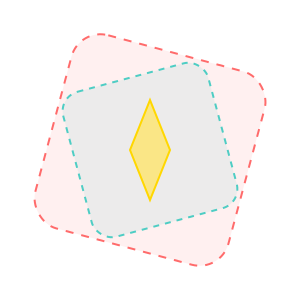

Discover Hidden Artisan Treasures Near You
Connecting you with local craftsmen preserving traditional arts and heritage
500+
Artisans
50+
Craft Types
100%
Handmade

Why ArtisanConnect?

Find Local Artisans
Discover craftsmen in your area with our interactive map

Hear Their Stories
Learn about traditional techniques and artisan histories

Support Local Economy
Directly contribute to preserving cultural heritage
This Week's Featured Artisans
Meet the makers who are keeping traditional crafts alive. Handpicked for their skill, story, and passion.